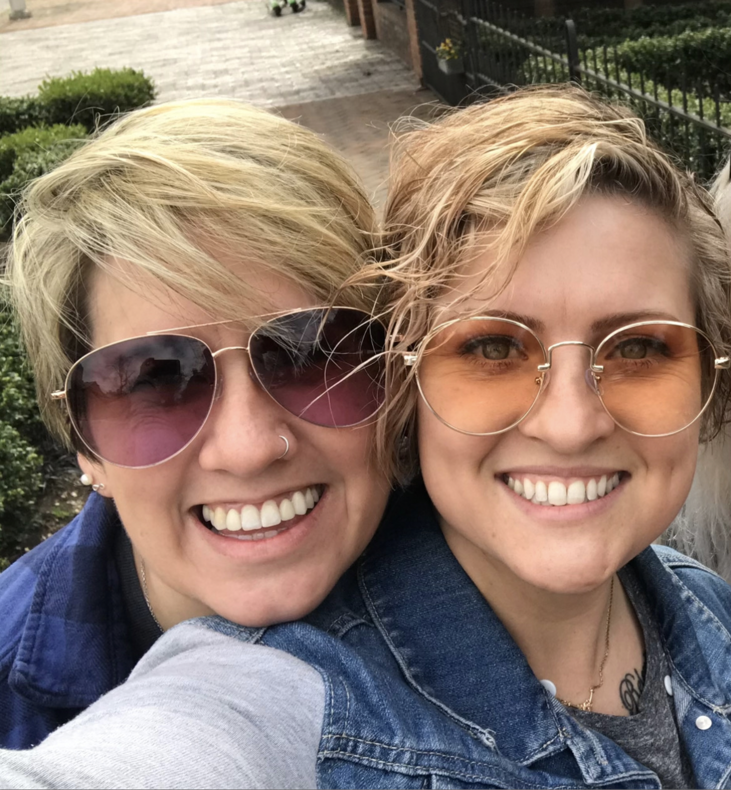
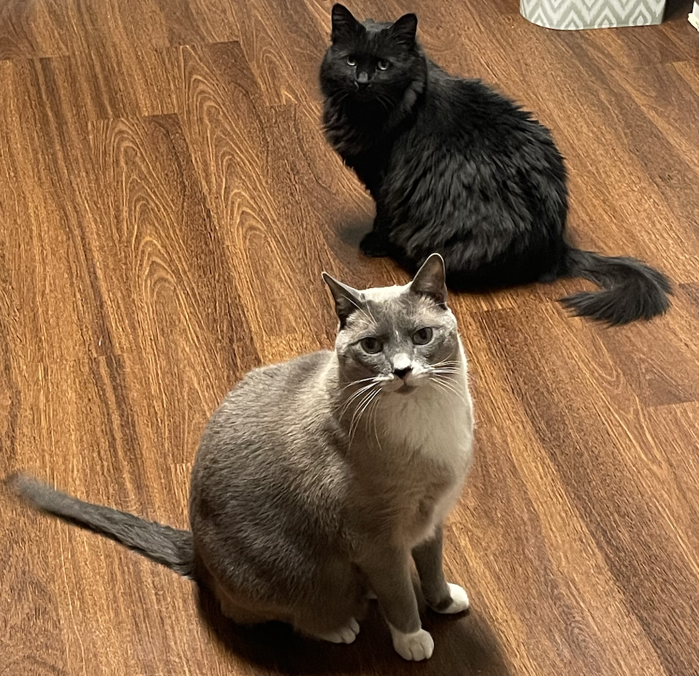
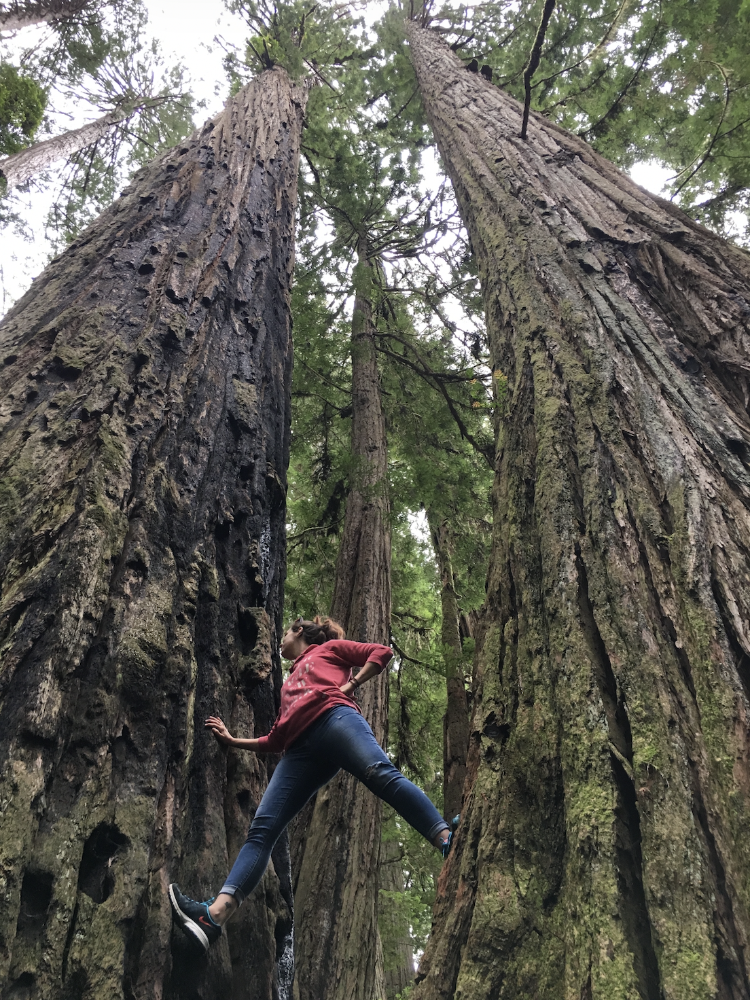
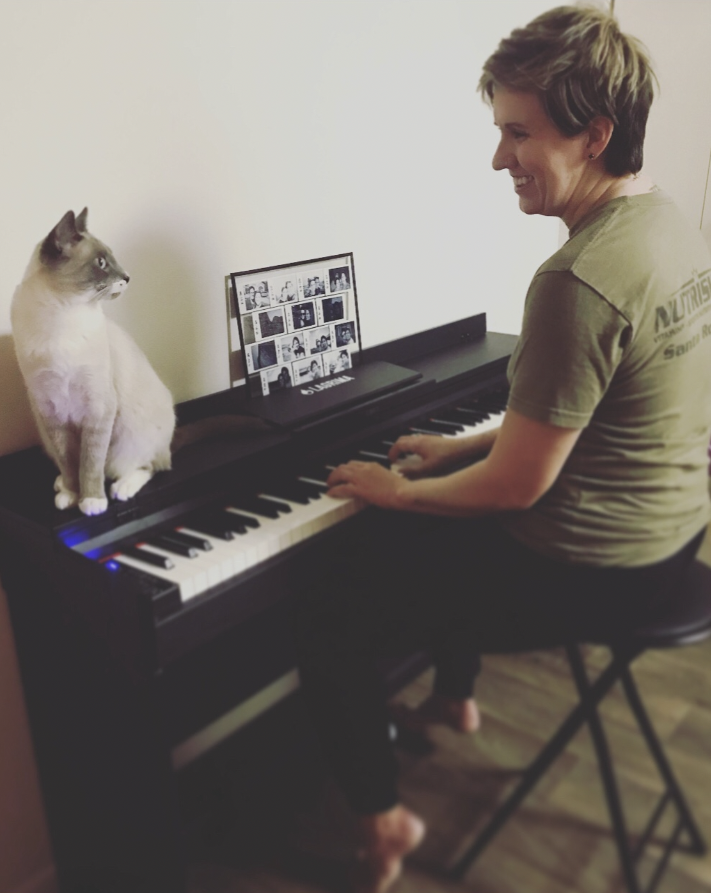

Communication
I learned how messages are shaped, received, misunderstood, and remembered.
About Kayla
Kayla Marie Collective exists because good work deserves to be understood. I help business owners turn their story, experience, and vision into a website that feels clear, human, and aligned with the quality of what they offer.
The Path Here
My background taught me how people communicate, process information, hesitate, trust, and make decisions. That shapes every website I build.
I learned how messages are shaped, received, misunderstood, and remembered.
I studied people, behavior, trust, crisis response, and what helps someone feel seen.
I learned how to build the structure that brings strategy and design to life online.
Now I bring all of that together to help business owners tell their story clearly.
More Than A Website
Before I ever built websites, I spent years studying communication, counseling, crisis response, and the ways people make sense of their lives.
I learned how people process information. How they build trust. How they respond when they feel understood. And how easily meaningful work can be overlooked when the message gets lost.
My own life taught me those lessons too. I know what it feels like to question everything you thought you knew, rebuild your understanding of yourself, and navigate seasons that force you to start over. Those experiences shaped the way I see people.
Today, I bring that perspective into every project I build. When we work together, I am not looking for the latest design trend. I want to understand who you are, what you have built, and why it matters.
Outside of work, I am married to my best friend and share life with our two fur babies, Charlie and Luna Binx. I love meaningful conversations, strong coffee, beautiful stories, and understanding what makes people tick.
The world has plenty of tools that can generate content and build websites. What it cannot replace is being truly seen. That is the work I care about.
I do not just want your website to look good. I want people to land there and finally understand the work you have fought to build.
Strategy Before Design
Colors, fonts, layouts, and visuals matter. But they cannot carry a business that is unclear. The strongest websites begin with understanding who you are, who you serve, what you offer, and what someone needs to feel before they take the next step.
The starting point
Most business owners are too close to their own work to explain it simply. I help pull the real message forward so people can quickly understand what you offer, who it is for, and why it matters.
The language
Your site should not feel stiff, generic, or copied from every other business in your industry. The words need to feel human, specific, and aligned with the way your clients already experience you.
The path
A good website answers questions before someone has to ask them. It reduces hesitation, creates flow, and makes the next step feel obvious instead of forcing visitors to figure it out on their own.
The confidence
Trust is built through clear messaging, thoughtful structure, strong visuals, proof, and a site that feels intentional from top to bottom. People should not have to wonder whether you are legitimate.
The meaning
Your background, values, process, and point of view matter. The goal is not to overshare. The goal is to help people see why your work exists and why you are the right person to do it.
The visual layer
Once the strategy is clear, the visuals become stronger. The colors, typography, layout, spacing, and imagery are no longer random choices. They support the message instead of trying to replace it.
The Human Behind The Work
I do life with my best friend, spoil our two fur babies, and have lived enough life to know that people are never just their work.
Behind every business is a person who took a risk. A person who stayed up late figuring things out, invested money they weren't sure they should spend, and kept showing up long after most people would have quit.
That is why I care so much about building websites that feel human, clear, and rooted in the story behind the person.
My path here was not a straight line. I studied communication, counseling, crisis response, and human behavior. I worked in nonprofit spaces, served communities, traveled, built things from scratch, and lived through seasons that changed how I see people. Every one of those experiences shaped how I approach this work today.
What all of those experiences taught me is that the work is rarely the hard part. The hard part is helping someone understand why it matters.
When I sit down to build a website, I am not just thinking about layouts, colors, or fonts. I am thinking about the person on the other side of the screen. What are they looking for? What questions do they have? What would help them trust you? What would make them stay? Because the best websites are not the ones that shout the loudest. They are the ones that help people feel understood. And that starts by understanding the person behind the business first.




The people and places that remind me there is always a story beneath the surface and that every business has one worth telling.
The Difference In My Process
Your website should do more than look polished. It should help people understand what you do, why it matters, and why they can trust you.
Most business owners already have the pieces. My job is to help pull the clearest, strongest version forward.
Every section should reduce confusion, answer questions, and make the next step easier to take.
You built something meaningful. Your website should carry that weight without making things complicated.
How That Shows Up
People connect faster when they understand what has been built and why it matters.
If people are confused, they usually leave. Clear beats clever every time.
Every section should have a job. Nothing should just sit there looking nice.
Your website should be built around the people you are trying to reach.
Start Here
Now let’s make sure people understand it.
Start a Project